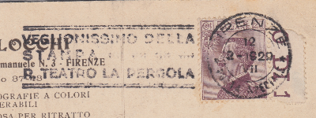

Veglionissimo La Stampa Firenze
Il Veglionissimo della Stampa al Teatro della Pergola di Firenze è stato il cuore pulsante del Carnevale fiorentino per gran parte del Novecento, vivendo la sua epoca d'oro negli anni Venti. La festa iniziava nella tarda serata del martedì grasso e travolgeva gli ospiti in balli sfrenati fino all'alba del giorno dopo, quando la musica finalmente sfumava. La sua vera magia risiedeva nell'atmosfera unica che si respirava: per una notte, la platea del teatro storico si trasformava in un'immensa sala da ballo dove l'alta aristocrazia si mescolava senza filtri a giornalisti, intellettuali e artisti d'avanguardia. A rendere immortale l'evento era anche la straordinaria cura visiva, con manifesti pubblicitari futuristi e Art Déco - come quello celeberrimo di Lucio Venna del 1927 - che trasformavano una semplice festa d'élite in un autentico capolavoro di costume e cultura pop dell'epoca.
Nell'edizione del 1929 e del 1930 era attivo per l'evento anche un ufficio postale all'interno del teatro. In entrambe le edizioni furono emessi annulli speciali dedicati all'evento.
